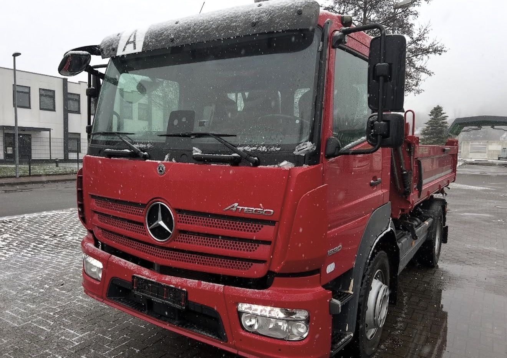
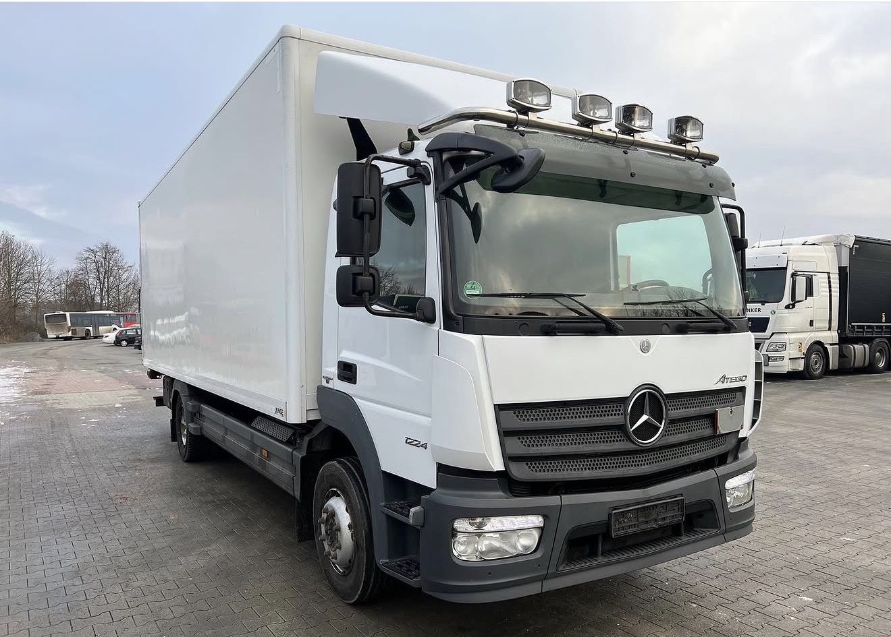
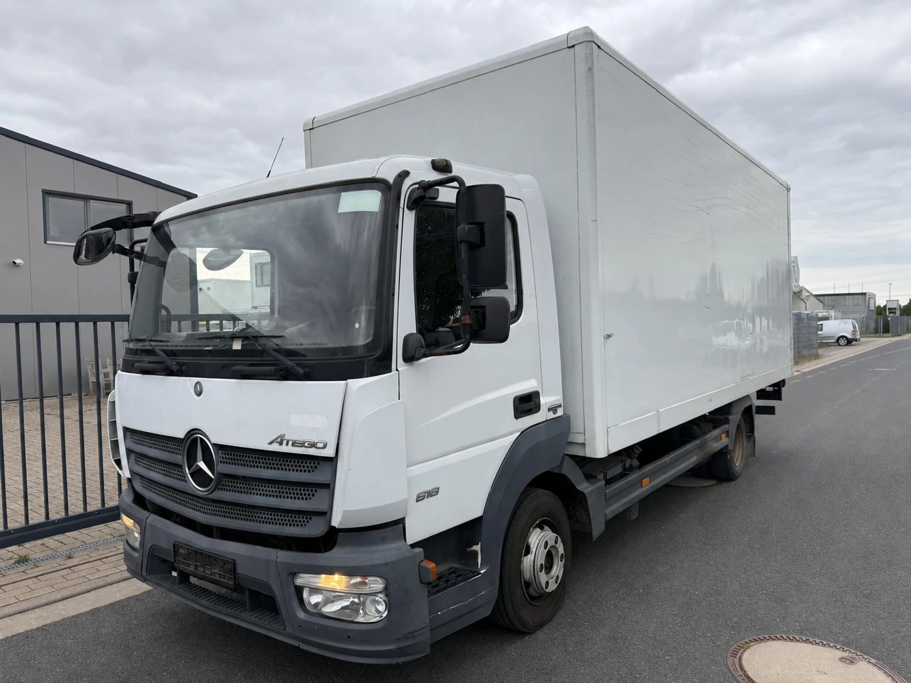
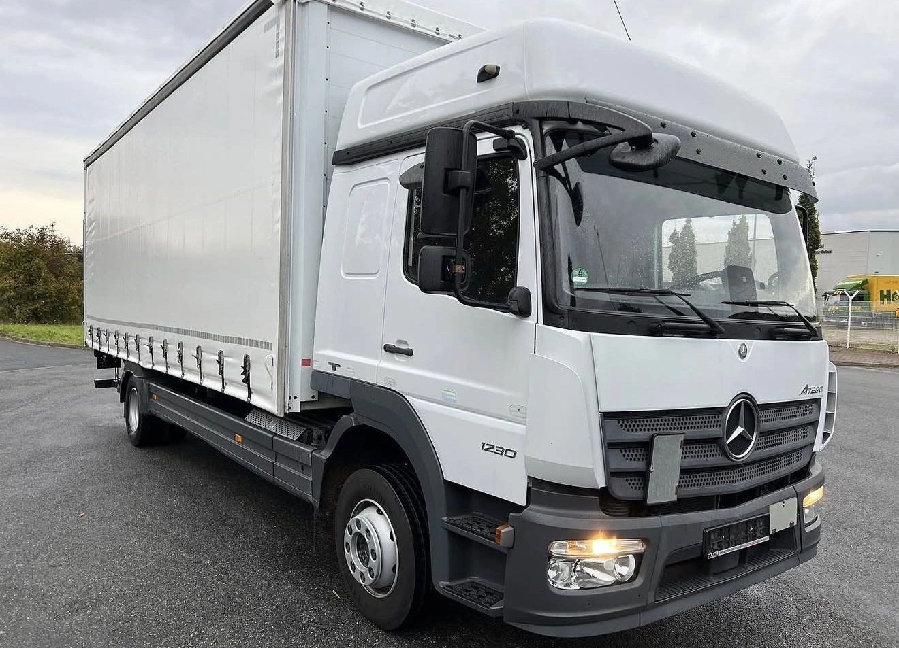

Der Atego ist der LKW, den man jeden Tag sieht und selten bewusst wahrnimmt. Er bringt Getränke in die Gastronomie, Pakete in die Wohngebiete und Material auf die Baustelle. Er fährt als Möbelwagen, als Kühlkoffer, als Kipper im Bauhof oder als Feuerwehrfahrzeug. Mercedes-Benz baut ihn seit 1998, und kaum ein anderer leichter LKW ist in Deutschland so verbreitet.
Wir bringen über 30 Jahre Erfahrung im Fahrzeughandel mit, und der Atego gehört zu den Fahrzeugen, die uns am häufigsten angeboten werden. In diesem Beitrag erklären wir, was die Zahlen auf der Tür bedeuten, wie Sie die Generation erkennen und was beim Verkauf zählt.
Was ist der Atego?
Der Atego ist die leichte und mittlere Baureihe von Mercedes-Benz, unterhalb von Actros, Arocs und Antos. Er deckt heute die Gewichtsklassen von 6,5 bis 16 Tonnen ab. Sein Revier ist der Verteilerverkehr: kurze und mittlere Strecken, viele Stopps, enge Innenstädte. Weil das Fahrgestell für sehr viele Aufbauten taugt, steckt hinter dem Namen Atego eine große Bandbreite an Fahrzeugen, vom kleinen Koffer-LKW bis zum Allrad-Kipper.
Abgelöst hat er 1998 die Baureihe LK, die „Leichte Klasse“, die 14 Jahre lang gebaut worden war.
Die Generationen auf einen Blick
- 1998 bis 2004: erste Baureihe, Euro II und Euro III
- 2004 bis 2013: überarbeiteter Atego, mit BlueTEC auch Euro IV, Euro V und EEV, 2010 noch einmal aufgefrischt
- seit 2013: neue Generation mit Euro VI, laufend weiterentwickelt
Bei der Zählung lohnt ein zweiter Blick. Mercedes-Benz selbst spricht beim Modell von 2013 von der zweiten Generation und versteht 2004 als Modellpflege. Im Handel und in Inseraten heißt der Atego von 2004 dagegen oft „Atego 2“ und der heutige „Atego 3“. Gemeint sind dieselben Fahrzeuge. Sicherer als jede Nummer ist deshalb das Baujahr zusammen mit der Abgasnorm.
1998 bis 2004: Der erste Atego
Vorgestellt wurde der Atego 1998 auf dem Nutzfahrzeugsalon RAI in Amsterdam. Zum Start gab es 25 Grundtypen von 6,5 bis 15 Tonnen, sechs Leistungsstufen und vier Fahrerhäuser. Unter dem Fahrerhaus arbeiteten ein Vierzylinder (OM 904 LA) und ein Sechszylinder (OM 906 LA) mit 122 bis 279 PS. Kurz darauf wurde er zum „International Truck of the Year 1999“ gewählt.
Ein halbes Jahr nach dem Start folgte ein schwerer Atego für 18 bis 26 Tonnen. Diese schwere Linie lief später unter dem Namen Axor weiter, der Atego blieb bei den leichten und mittleren Gewichtsklassen.
2004 bis 2013: Modellpflege und neue Abgastechnik
2004 wurde der Atego überarbeitet. Er bekam das automatisierte Getriebe G85-6 und die BlueTEC-Technik: ein SCR-Katalysator, der mit AdBlue arbeitet. Damit erreichten die Motoren Euro IV, Euro V oder EEV. Ab 2010 war die gesamte Baureihe in EEV lieferbar, und mit dem Atego BlueTEC Hybrid 1222 L kam ein Serien-LKW mit Diesel-Elektro-Hybrid auf den Markt.
Diese Baureihe ist auf dem Gebrauchtmarkt noch sehr präsent. Wie beim Actros gilt: Zwei Fahrzeuge aus demselben Jahr können sich je nach Abgasnorm in ihren Einsatzmöglichkeiten deutlich unterscheiden.
Seit 2013: Der Atego mit Euro VI
2013 stellte Mercedes-Benz den neuen Atego vor, mit Euro-VI-Motoren aus der neuen Motorenfamilie: dem Vierzylinder OM 934 und dem Sechszylinder OM 936, zusammen 156 bis 299 PS. Das Cockpit wurde an Actros, Antos und Arocs angeglichen, das automatisierte Getriebe PowerShift 3 und das Stabilitätsprogramm ESP wurden Serie. Diese Motoren treiben den Atego bis heute an.

Seit 2024 gibt es zusätzlich den Notbremsassistenten Active Brake Assist 6 und den Abbiegeassistenten Active Sideguard Assist 2 (Daimler Truck).
Was bedeuten 818, 1224 oder 1530?
Die Zahl auf der Fahrertür ist kein Fantasiename, sondern eine Kurzbeschreibung. Die ersten ein oder zwei Ziffern stehen für das zulässige Gesamtgewicht in Tonnen, die letzten beiden für die Motorleistung in PS, geteilt durch zehn:
- Atego 818: rund 8 Tonnen, rund 180 PS
- Atego 1224: rund 12 Tonnen, rund 240 PS
- Atego 1530: rund 15 Tonnen, rund 300 PS

Beide Werte sind gerundet. Ein 818 ist häufig auf 7,49 Tonnen zugelassen, ein 1224 auf 11,99 Tonnen. Warum gerade diese Werte so häufig sind, steht weiter unten. Buchstaben hinter der Zahl beschreiben die Ausführung, etwa K für Kipper oder A für Allradantrieb. Welches Gewicht und welche Leistung Ihr Fahrzeug genau hat, steht in der Zulassungsbescheinigung Teil I.

Welche Fahrerhäuser gibt es?
Beim aktuellen Atego gibt es vier Fahrerhäuser in drei Längen:
- S-Fahrerhaus ClassicSpace: kurz und kompakt, für den Verteilerverkehr mit vielen Stopps. Es gibt eine verlängerte Variante mit etwas mehr Platz hinter den Sitzen.
- L-Fahrerhaus ClassicSpace: mit Liege, für Touren mit Übernachtung.
- L-Fahrerhaus BigSpace: wie das L-Fahrerhaus, aber mit Hochdach und Stehhöhe.
- Doppelkabine: mit sechs Sitzplätzen, für Feuerwehr, Kommunen und Bautrupps.
Das Fahrerhaus sagt viel über den bisherigen Einsatz. Ein S-Fahrerhaus mit Koffer und Ladebordwand kommt meist aus dem Verteilerverkehr, ein L-Fahrerhaus eher aus dem regionalen Fernverkehr.
7,5 Tonnen: Warum diese Grenze so wichtig ist
Dass so viele Atego auf 7,49 Tonnen zugelassen sind, hat zwei Gründe.
Der Führerschein. Bis 7,5 Tonnen reicht die Klasse C1. Wer schwerer fährt, braucht die Klasse C. Für viele Betriebe ist es leichter, Fahrer mit C1 zu finden.
Die Maut. Seit dem 1. Juli 2024 gilt die LKW-Maut in Deutschland schon für Fahrzeuge über 3,5 Tonnen. Für Handwerksbetriebe gibt es eine Ausnahme, aber nur für Fahrzeuge mit mehr als 3,5 und weniger als 7,5 Tonnen, wenn der Betrieb Halter ist, eigene Mitarbeiter fahren und Material oder Werkzeug für die eigene Arbeit transportiert wird (IHK Region Stuttgart, nach Angaben des BALM). Ein Atego mit 7,49 Tonnen kann darunter fallen, einer mit 7,5 Tonnen nicht mehr. Ob die Ausnahme im Einzelfall greift, klären Sie am besten mit dem BALM oder Ihrer Kammer.
Für einen gebrauchten Atego heißt das: Der 7,5-Tonner spricht vor allem Handwerk und Handel an, der 12- bis 16-Tonner eher Speditionen und Fuhrparks mit Berufskraftfahrern.
Was ist ein gebrauchter Atego heute wert?
Oft weniger, als Verkäufer erwarten. Der Atego ist zuverlässig und beliebt, aber genau deshalb gibt es sehr viele davon. Diese Punkte bestimmen den Preis:
- Das Angebot. Große Flotten tauschen ihre Atego nach festen Zyklen aus, oft viele Fahrzeuge auf einmal. Käufer haben die Auswahl und vergleichen genau.
- Die Abgasnorm. Der Atego fährt dort, wo Umweltzonen gelten: in den Innenstädten. Ohne grüne Plakette ist er dort nicht zu gebrauchen (Bundesumweltministerium). Außerdem richtet sich die Maut nach Schadstoff- und CO2-Klasse, und ältere Fahrzeuge zahlen pro Kilometer mehr.
- Der Aufbau. Ein Koffer mit Ladebordwand, ein Kühlaufbau oder ein Kipper passt nur zu Käufern, die genau das brauchen. Je spezieller der Aufbau, desto kleiner der Kreis der Interessenten.
- Inseratspreise sind keine Verkaufspreise. Was in Online-Börsen steht, ist der Wunsch des Verkäufers. Der tatsächlich erzielte Preis liegt nach der Verhandlung meist darunter, und viele Fahrzeuge stehen dort monatelang.
- Der Weg ins Ausland kostet. Ältere Atego finden ihre Käufer oft im Ausland. Transport, Papiere und Zoll kosten Geld, das in jeden Ankaufspreis einfließt.
Trotzdem lohnt sich ein Verkauf fast immer. Ein Atego, der nicht mehr gebraucht wird, kostet jeden Monat Steuer, Versicherung und Stellplatz und verliert weiter an Wert. Wer ihn verkauft, solange er noch im Einsatz ist, erzielt in der Regel das bessere Ergebnis.
Wir kaufen Atego aller Baujahre
Die ECS Exclusive Commerce Services GmbH aus Gehrden bei Hannover kauft Atego an, vom 7,5-Tonner bis zum 16-Tonner, mit Koffer, Plane, Pritsche, Kühlaufbau oder Kipper. Einzeln oder als ganzen Fuhrpark. Weil wir Nutzfahrzeuge auch exportieren, finden wir oft auch für ältere Baureihen einen Abnehmer. Welche Fahrzeuge wir sonst noch ankaufen, sehen Sie unter Was wir ankaufen.
So läuft es ab:
- Sie rufen uns an, schreiben uns per WhatsApp oder senden uns eine E-Mail.
- Sie nennen uns Typ, Erstzulassung, Kilometerstand, Aufbau und Standort und schicken ein paar Fotos.
- Wir machen Ihnen ein konkretes Angebot.
- Nach Ihrer Zusage erstellen wir den Kaufvertrag und schließen das Geschäft ab.
- Wir holen den Atego ab, deutschlandweit.
Mehr zum Ablauf lesen Sie unter Unsere Arbeit. Sie möchten Ihren Atego verkaufen? Schreiben Sie uns oder rufen Sie an.
Hinweis: Dieser Beitrag dient der allgemeinen Information und ersetzt keine Rechts- oder Steuerberatung. Alle Angaben ohne Gewähr, Stand: 2. November 2026. Genannte Marken und Modellbezeichnungen gehören ihren jeweiligen Inhabern. Die ECS GmbH ist ein unabhängiger Händler und steht in keiner Verbindung zu den Herstellern.